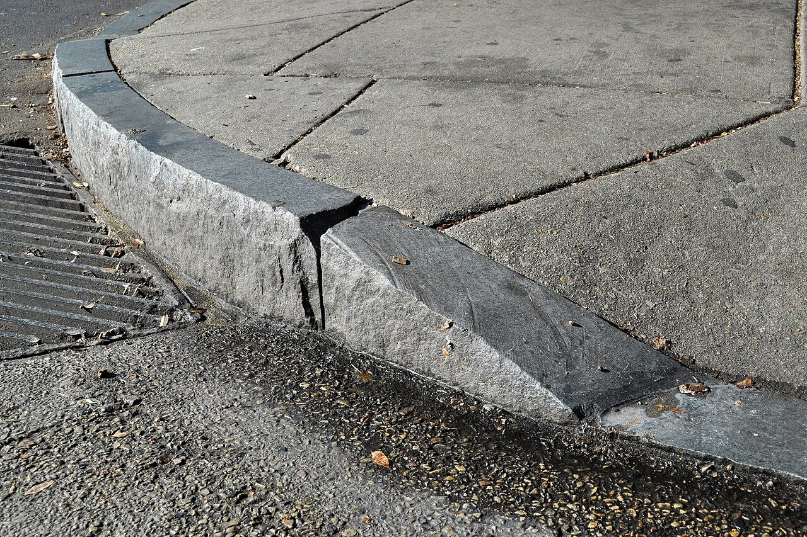
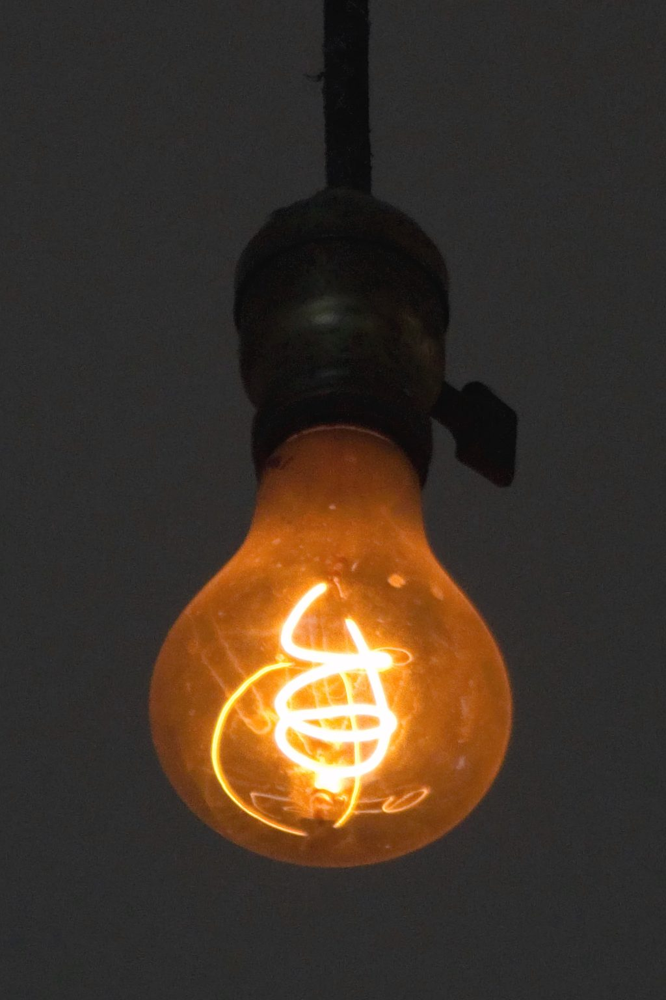
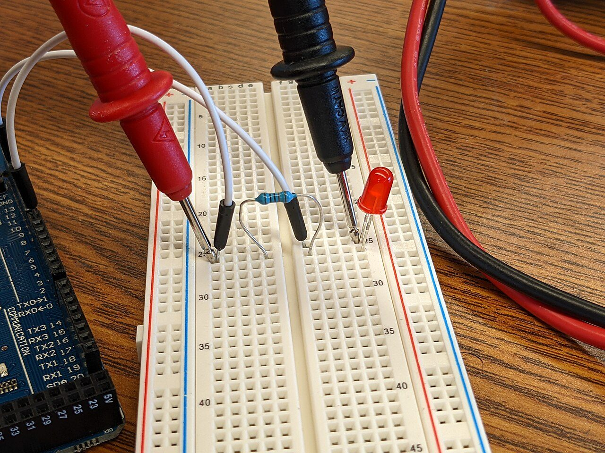
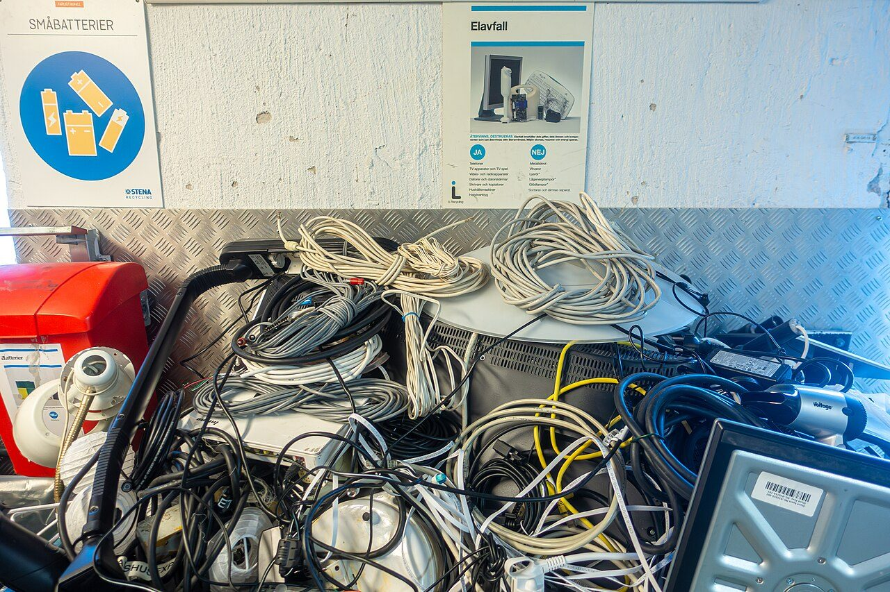
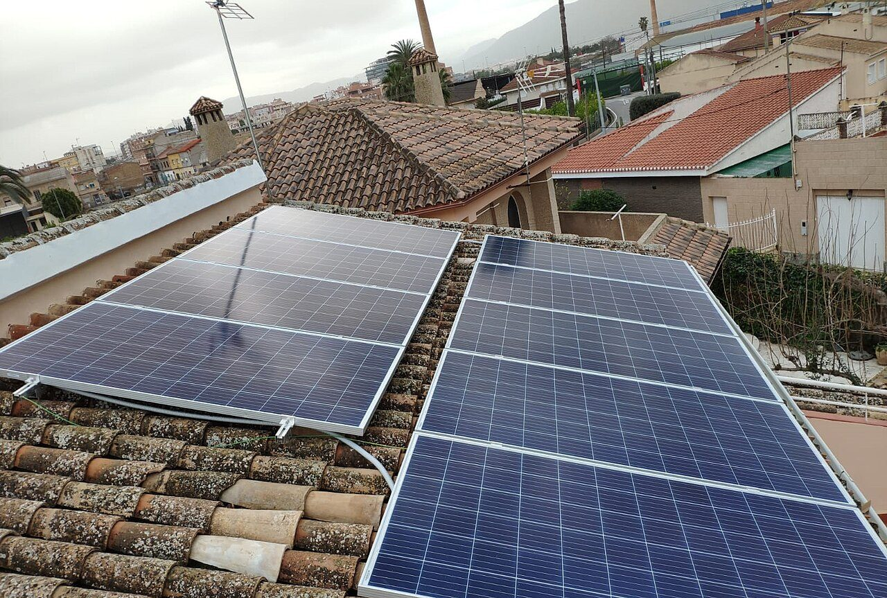
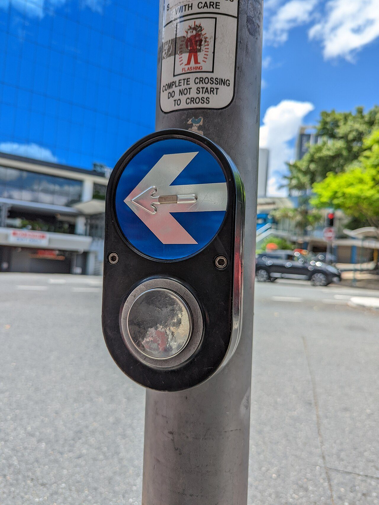
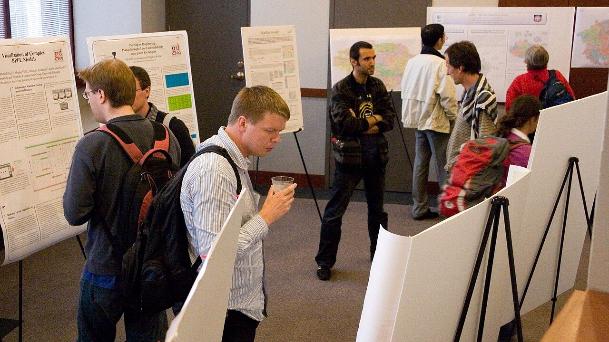

Ordena estas cuatro cosas. Te vas a equivocar, y está estudiado.
Cuánto pesa de verdad cada cosa que haces, con factores citados y un gráfico logarítmico, porque en escala normal la mitad de las barras no se verían.
Vamos a hacer inventario. Después de siete unidades, vuestro aparato mide algo del mundo, decide solo, actúa y hasta avisa desde lejos. Un riego que no deja morir la planta del aula, un aviso de que hay que ventilar, un contenedor que dice que está lleno. Funciona.
Y justo por eso esta unidad empieza con dos preguntas incómodas: ¿funciona para todo el mundo? y ¿a qué coste para los demás? Hoy va la segunda.
De qué va esta unidad
Tu aparato funciona. ¿Funciona para todo el mundo, y a qué coste para los demás?Voz sintetizada sobre guión propio. La boca sigue el volumen real de la voz.
- Dejar el cargador del móvil enchufado sin el móvil, un año entero.
- Cargar el móvil del todo todos los días durante un año.
- Comerse un filete de ternera de 200 gramos.
- Fabricar el móvil que lleváis en el bolsillo.
Ahora comparad con el de al lado. Lo normal es que no coincidáis, y lo normal también es que los dos os equivoquéis. No sois vosotros: esto está medido.
En 2010, Shahzeen Attari y su equipo publicaron en la revista PNAS lo que contestaron 505 personas a preguntas como esta. Dos resultados:
- Se quedaban cortos por un factor de 2,8 de media, y se quedaban más cortos cuanto más grande era el consumo de verdad.
- Al preguntarles qué era lo más eficaz que podían hacer, la mayoría dijo apagar cosas. Los expertos dicen otra cosa: cambiar el aparato por uno que gaste menos. Apagar la luz se ve; la nevera, no.
No es que la gente sea tonta. Es que habéis ordenado sin unidad: habéis ordenado por lo que os suena que contamina. Y ordenar por tamaño exige una unidad, como ordenar por peso exige kilos.
¿Cuál podría ser esa unidad? ¿Y de dónde saldría el número de cada cosa?
La unidad existe y no es complicada. Se llama kilogramo de CO₂ equivalente, y todo lo demás de esta sesión cuelga de ella.
Definiciones
Huella de carbono: los gases de efecto invernadero que se sueltan por hacer algo, medidos en kilogramos de CO₂ equivalente (kg de CO₂e).
Equivalente, ¿por qué? Porque no solo se suelta CO₂. Un kilo de metano calienta mucho más que un kilo de CO₂, y un kilo de óxido nitroso, más todavía. Así que todo se traduce a la misma moneda: cuánto CO₂ haría el mismo efecto. Eso es lo que añade la palabra equivalente.
Factor de emisión: los kg de CO₂e que sueltan una unidad de algo. Un kilo de ternera, un kWh de electricidad, un litro de gasolina.
huella = cantidad × factor de emisión
Y ya está. Toda la sesión es esa multiplicación. Lo difícil no es la cuenta: es de dónde sacas el factor y dónde decides que empieza y acaba la cuenta.
Eso segundo tiene nombre y es el que más discusiones ahorra:
El límite de la cuenta
Antes de dar un número hay que decir qué entra. De un móvil se puede contar solo la electricidad de cargarlo, o además fabricarlo, o además traerlo desde donde se hizo, o además lo que cuesta deshacerse de él.
No hay un límite «correcto»: hay un límite declarado. Un número sin límite declarado no se puede comparar con ningún otro, y casi todas las discusiones sobre esto son dos personas comparando dos cuentas con límites distintos.
Un ejemplo con números de verdad. Apple publica la huella de cada modelo que vende. La del iPhone 17 de 256 GB son 55 kg de CO₂e, y los reparte así: 76 % fabricarlo, 18 % la electricidad de cargarlo durante los tres años que suponen de vida, 4 % traerlo y 1 % deshacerse de él.
El mismo modelo con 512 GB son 61 kg. Seis kilos más de CO₂ por tener más memoria, sin usarlo ni un minuto más.
Fíjate en lo que dice ese 76 %: fabricarlo pesa cuatro veces más que usarlo. Guárdalo, porque en la sesión 3 lo vamos a necesitar entero.
Medir no es obvio: hay que ir a buscarlo
Ahora vosotros. Abajo están las cuatro acciones del reto, y otras cuatro más. Primero ordenad las cuatro en la escena, comprobad, y luego mirad las ocho.
Paso 1 · ordénalas tú, de la que menos emite a la que más
Paso 2 · la cuenta, para las ocho
Orden de magnitud
El orden de magnitud de un número es cuántas cifras tiene, o dicho mejor: a qué potencia de diez se parece. 0,05 kg y 0,08 kg son del mismo orden. 0,05 kg y 55 kg se llevan tres órdenes: uno es mil veces el otro.
La regla de oro para comparar huellas: divide, no restes. La pregunta buena no es «¿cuánto más?» sino ¿cuántas veces más?
Y la consecuencia práctica, que es la que cuesta aceptar: si una cosa pesa mil veces más que otra, afinar la pequeña no sirve para nada. Puedes desenchufar el cargador durante mil años y no llegarás a compensar un filete. No es que esté mal desenchufarlo: es que no es ahí donde está el problema, y mientras lo miras, no miras donde sí está.
Pulsa arriba UE y luego Mundo. Las barras amarillas crecen y las azules no se mueven. Eso es porque un kWh no cuesta lo mismo según dónde y cuándo se genere: en 2024, un kWh de la red española llevaba 146 g de CO₂, uno de la media europea 211 g, y uno de la media mundial 471 g, porque en el mundo se sigue quemando mucho carbón.
De ahí salen dos ideas que parecen contrarias y no lo son. Una: lo que tú enchufas contamina tres veces menos aquí que en la media mundial, y eso no lo has hecho tú, lo ha hecho la red. Otra: por mucho que la red española llegara a cero, el filete y el móvil seguirían exactamente igual. La barra azul no se mueve.
¿De dónde sale que un litro de gasolina hace 2,31 kg de CO₂? ¿Cómo puede pesar el gas más del triple que el líquido del que sale? La cuenta se puede hacer y merece la pena:
- Un litro de gasolina pesa unos 0,75 kg.
- De eso, alrededor del 86 % es carbono: 0,645 kg de carbono.
- Al quemarse, cada átomo de carbono (masa 12) se junta con dos de oxígeno (masa 16 cada uno) y sale CO₂ (masa 44). O sea que cada kilo de carbono se convierte en 44/12 = 3,67 kg de CO₂.
- 0,645 × 3,67 = 2,37 kg.
El valor publicado es 2,31, un 3 % por debajo, porque la gasolina no es carbono puro y cada refinería hace la suya. Pero la cuenta sale, y eso es lo que te dice que el número no se lo ha inventado nadie. El oxígeno que pesa lo saca del aire.
Un repaso corto al concepto y a cómo se calcula, por si quieres oírlo contado de otra manera antes de la práctica. El vídeo no se carga hasta que lo pulsas, y se reproduce sin cookies de seguimiento. Si la red del centro bloquea YouTube, ábrelo directamente aquí. El vídeo es de su autor y no forma parte del material publicado bajo la licencia de esta página.
Primera parte · esta aula, con datos de esta aula (10 min)
Nada de estimaciones a ojo: levantaos y mirad.
- Contad los tubos o lámparas que hay y leed en la etiqueta cuántos vatios tiene cada uno. Si no se ve la etiqueta, anotad que no se ve y usad 36 W, diciendo que es una suposición.
- Calculad la potencia total en kW y la energía de dejarlas encendidas una noche de 14 horas: kWh = kW × h.
- Pasadlo a CO₂ con el factor de la red española, y después a todo un curso de 175 días lectivos.
- Meted vuestro número en la escena, en la fila de las luces, y mirad en qué posición queda la barra.
Segunda parte · tres cosas vuestras (10 min)
Elegid tres cosas que hagáis de verdad en una semana normal. Para cada una, en la libreta:
- La cantidad, con su unidad, y cómo la habéis sabido.
- El factor y de dónde lo habéis sacado. Vale usar los de la escena; si buscáis otro, hay que poder decir quién lo publica.
- El límite de vuestra cuenta: qué entra y qué no.
- El resultado y su orden de magnitud (¿centésimas de kilo? ¿kilos? ¿decenas de kilos?).
Y una frase final: «de estas tres, la que de verdad pesa es…», justificada dividiendo, no restando.
Cómo se evalúa
- Las lámparas están contadas de verdad y los vatios leídos o declarados como suposición (2 puntos).
- La cuenta del aula, con unidades en cada paso (2 puntos).
- Las tres acciones, con cantidad, factor y fuente (3 puntos).
- El límite de la cuenta está escrito en las tres (1 punto).
- La comparación final divide en vez de restar (2 puntos).
- ¿Cuál es la única cuenta que hay que saber hacer para calcular una huella de carbono?
Ver respuesta
Huella = cantidad × factor de emisión. Lo difícil no es multiplicar: es conseguir un factor de fiar y decir dónde empieza y acaba la cuenta.
- ¿Por qué se dice «CO₂ equivalente» y no «CO₂» a secas?
Ver respuesta
Porque también se sueltan otros gases —metano, óxido nitroso— que calientan más por kilo. Se traduce todo a la misma moneda: cuánto CO₂ haría el mismo efecto.
- Una acción emite 0,05 kg y otra 55 kg. ¿Cuántos órdenes de magnitud hay entre ellas, y qué consecuencia tiene?
Ver respuesta
Tres: una es unas mil veces la otra. La consecuencia es que afinar la pequeña no sirve de nada, y que mientras la miras no estás mirando donde sí hay algo que hacer.
- ¿Por qué al cambiar de España a Mundo en la escena se mueven unas barras y otras no?
Ver respuesta
Porque solo cambia el factor de la electricidad: 146 g de CO₂ por kWh en España en 2024 frente a 471 de media mundial. Lo que no pasa por un enchufe —la ternera, fabricar el móvil, la gasolina— no se entera de en qué país estás.
Lectura del tema
Una sesión entera dedicada a leer y contestar, y conviene hacerla pronto: cuenta de dónde vienen las tres ideas que vais a usar después. 30 párrafos numerados, cada uno lee el suyo en voz alta, en orden. Luego, diez preguntas por escrito.
La rampa no se añade al final: para entonces ya no cabe
Accesibilidad no es una adaptación pegada al final. Los siete principios, el efecto del corte de acera y cuatro criterios que se calculan con la norma delante.
Vuestro aparato ya está montado y medido. Lo cuelgan en la pared del pasillo, junto a la puerta del taller, y queda así:
Funciona. Lo habéis probado los cinco del grupo y va perfecto.
Lo que sale casi siempre es «un ciego», y ahí se acaba. Y ahí está el problema entero, porque esa respuesta no permite hacer nada: no dice cuántos, no dice por qué y sobre todo no dice qué habría que cambiar y cuánto. Es una opinión, como las de la sesión pasada.
Pero probad con lo más fácil, el escalón. La solución que se le ocurre a todo el mundo es «le ponemos una rampa». Vamos a ver qué pasa cuando se hace la cuenta.
Un escalón de 18 cm. Dibuja mentalmente la rampa que le pondrías. ¿Cuántos metros de pasillo crees que se va a comer?
Casi todo el mundo dice «medio metro», o «un metro». La respuesta, con la norma delante, son más de cinco metros. Y por eso la rampa no se puede añadir al final: para entonces ya no cabe.
Que la solución haya que pensarla desde el principio, y no pegarla al final, tiene nombre desde 1997.
Definiciones
Accesibilidad: que una persona concreta pueda usar una cosa concreta. Se arregla con una adaptación: una rampa, una versión en braille, un intérprete.
Diseño universal (o diseño para todos): diseñar desde el principio para que no haga falta la adaptación. El nombre y los siete principios son de Ronald Mace y su equipo, en la Universidad Estatal de Carolina del Norte, en 1997. Mace tuvo polio de niño y usó silla de ruedas toda su vida: no se lo contaron.
La diferencia no es de buenas intenciones, es de cuándo. Una adaptación llega tarde por definición, cuesta más y casi nunca queda bien. Vuestro escalón de 18 cm es el ejemplo: puesto el escalón, ya no hay sitio para la rampa.
Los siete principios (Mace y otros, 1997)
- Uso equitativo. Que sirva igual a todo el mundo, sin una entrada «especial» por detrás.
- Flexibilidad. Que admita varias maneras de usarlo: zurdos y diestros, deprisa y despacio.
- Simple e intuitivo. Que se entienda sin manual y sin saber el idioma.
- Información perceptible. Que lo importante se diga de más de una manera: luz y sonido, color y forma, texto y símbolo.
- Tolerancia al error. Que equivocarse no sea grave, y que se pueda deshacer.
- Poco esfuerzo físico. Que no haya que hacer fuerza ni mantener una postura.
- Tamaño y espacio suficientes para acercarse y alcanzarlo, de pie o sentado.
Cuatro de los siete no tienen nada que ver con ninguna discapacidad: son, simplemente, estar bien hecho.
El argumento que convence: el corte de acera

Esto no es una metáfora bonita: está contado. En 2006, el organismo que regula la televisión en el Reino Unido midió cuánta gente veía la tele con subtítulos. Eran 7,5 millones de espectadores. De ellos, unos seis millones oían perfectamente.
Los subtítulos se hicieron para personas sordas y hoy los usan cuatro veces más personas que no lo son: en el metro, con el bebé dormido al lado, en un idioma que están aprendiendo. Y no es el único caso:
- La máquina de escribir. En 1808, Pellegrino Turri construyó una para que una condesa ciega pudiera escribir cartas ella sola.
- El audiolibro. Los Talking Books los grabó en 1932 la American Foundation for the Blind, para personas ciegas.
- Los peladores y cuchillos de mango grueso y blando. Sam Farber los sacó en 1990 porque su mujer tenía artritis y no podía agarrar los mangos finos de metal. Hoy están en casi todas las cocinas, y quien los compra no suele saber de dónde vienen.
Por eso el argumento del diseño universal no es «hazlo por ellos». Es hazlo porque sale mejor.
Y ahora, con números y con la norma delante
Lo bueno de esto es que casi todo se puede medir. Aquí tenéis vuestra caja dibujada a escala. Cambiad lo que queráis y mirad los cuatro criterios de abajo: cada uno dice qué artículo lo exige y enseña la cuenta.
Los tres criterios medibles, y de dónde salen
De la Orden TMA/851/2021, que es la norma española de accesibilidad en espacios públicos urbanizados:
- Rampas (art. 14): anchura libre de 1,80 m; cada tramo, 9,00 m como mucho en horizontal; pendiente máxima del 10 % en tramos de hasta 3,00 m y del 8 % hasta 9,00 m; rellano de 1,50 m entre tramos, y otro tanto libre al principio y al final.
- Vados peatonales (art. 20.6), que es el corte de acera: aún más estricto, 10 % hasta 2,00 m y 8 % hasta 3,00 m.
- Pulsadores (art. 23.2.a): entre 0,80 y 1,20 m de altura, 12 cm² de superficie como mínimo, y accionables con el puño o con el codo.
La cuenta de la rampa es una división:
longitud en horizontal = desnivel / pendiente
Vuestros 18 cm al 8 % = 0,18 / 0,08 = 2,25 m de rampa. Más el metro y medio libre de cada punta: 5,25 m de pasillo. Por eso no cabe.
El contraste, que también es un número
El cuarto criterio no es de una norma de urbanismo sino de las WCAG, las reglas de accesibilidad de la web del W3C. Dicen que entre un texto y su fondo tiene que haber una razón de contraste de 4,5:1 como mínimo. Y se calcula, no se opina:
- De cada color se toman sus tres canales R, G y B, de 0 a 255, y se pasan a luminancia relativa: L = 0,2126·R + 0,7152·G + 0,0722·B, con los canales linealizados antes.
- El contraste es (L del claro + 0,05) / (L del oscuro + 0,05).
Vuestro azul sobre verde da menos de 4,5:1, y por eso la escena lo suspende. Y el primero que lo va a sufrir no es un ciego: es cualquiera mirando la caja a pleno sol en el patio.
¿Por qué el verde pesa 0,7152 y el azul solo 0,0722, diez veces menos? Porque el ojo no ve igual los tres colores: tiene mucha más sensibilidad al verde. Un verde y un azul del mismo «número» no brillan lo mismo para ti, y lo que hay que comparar para leer no son los colores, es el brillo.
Por eso dos colores muy distintos pueden tener un contraste malo —el azul y el verde de vuestra caja— y dos colores casi iguales, como el negro y el blanco, tenerlo perfecto. El contraste no es diferencia de color: es diferencia de luminancia. Prueba en la escena a poner un rojo intenso sobre un verde intenso y míralo.
Dos minutos para fijar la diferencia entre adaptar y diseñar desde el principio. El vídeo no se carga hasta que lo pulsas, y se reproduce sin cookies de seguimiento. Si la red del centro bloquea YouTube, ábrelo directamente aquí. El vídeo es de su autor y no forma parte del material publicado bajo la licencia de esta página.
Primera parte · los siete principios, uno a uno (8 min)
Haced una tabla de tres columnas: principio, qué hace vuestro aparato y qué cambiaríais. Los siete, sin saltarse ninguno. No vale «sí» ni «no»: hay que escribir qué pasa.
Dos que se suelen despachar mal y son los más útiles en un aparato con sensores:
- Información perceptible. Si vuestro aviso es un LED rojo y ya está, la información va por un solo canal. ¿Qué pasa si la persona no ve el LED, o no distingue el rojo del verde, o está de espaldas? Añadid un segundo canal: sonido, vibración, texto, posición.
- Tolerancia al error. Si alguien pulsa sin querer, ¿qué pasa? ¿Se puede deshacer? En un riego, una pulsación de más puede ahogar la planta.
Segunda parte · las cuentas (7 min)
Con la escena y con la libreta, para vuestro aparato:
- Medid con un metro a qué altura pensabais colgarlo y decid si entra en la franja de 0,80 a 1,20 m.
- Mirad el diámetro del pulsador que tenéis, calculad su superficie con πr² y comparadla con los 12 cm². Si no llega, calculad qué diámetro haría falta.
- Si hay cualquier desnivel en el sitio donde va a estar, calculad la rampa: su longitud, sus tramos, sus rellanos y los metros de suelo que se come.
- Meted en la escena los dos colores de vuestro rótulo y anotad el contraste que sale. Si no llega a 4,5:1, buscad dos que sí lleguen.
Tercera parte · el corte de acera, al revés (5 min)
Elegid un cambio de los que acabáis de proponer y escribid a quién más le viene bien, aparte de a quien lo necesitaba. Si no se os ocurre nadie, probablemente sea una adaptación pegada al final y no un cambio de diseño.
Cómo se evalúa
- La tabla tiene los siete principios y ninguna casilla dice solo sí o no (2 puntos).
- La altura, medida con un metro (1 punto).
- La superficie del pulsador, calculada con πr², y el diámetro que haría falta si no llega (2 puntos).
- La rampa, con su longitud, sus rellanos y los metros de suelo (2 puntos).
- Los dos colores, con su contraste, y una pareja alternativa que pase (2 puntos).
- El cambio elegido dice a quién más le sirve (1 punto).
- ¿Qué diferencia hay entre accesibilidad y diseño universal?
Ver respuesta
La accesibilidad arregla un problema concreto con una adaptación añadida. El diseño universal diseña desde el principio para que la adaptación no haga falta. La diferencia no es de intención, es de cuándo: cuando el escalón ya está hecho, la rampa no cabe.
- Un escalón de 24 cm. ¿Cuánta rampa hace falta al 8 %, y cuánto suelo ocupa en total?
Ver respuesta
0,24 / 0,08 = 3,00 m de rampa en horizontal. Más el metro y medio libre que la norma pide al principio y al final: 6,00 m de suelo. Y es un solo tramo, porque no pasa de 9,00 m.
- ¿Por qué el criterio del pulsador habla de superficie y no de diámetro?
Ver respuesta
Porque lo que importa es acertar sin puntería, y eso depende del área, no de una medida. La norma pide 12 cm², que en un botón redondo son unos 39 mm de diámetro: se acciona con el puño o con el codo, que es justo lo que pide. Un botón cuadrado de 3,5 cm de lado también vale.
- Dos colores muy distintos entre sí tienen mal contraste. ¿Cómo puede ser?
Ver respuesta
Porque el contraste no mide diferencia de color, mide diferencia de luminancia: cuánto brilla cada uno para el ojo. Y el ojo pesa el verde diez veces más que el azul. Un azul y un verde pueden brillar casi igual, y entonces el texto no se despega del fondo.
Tu móvil va lento. Ahora nombra el mecanismo.
Hay fraude documentado y hay química que no es culpa de nadie. Tres preguntas para separarlos, y tres casos con fecha, con actas y con multa.
El móvil que llevas encima va más lento que cuando lo compraste, se te apaga antes y a lo mejor ya no le llegan actualizaciones.
La primera respuesta es siempre la misma y llega en tres segundos: obsolescencia programada. La segunda no llega. Y no es porque la clase no sepa: es porque esas dos palabras se usan para tapar tres cosas distintas, y mezcladas no explican ninguna.
Mira estos dos casos, que se contradicen entre sí:
Caso A. Un portátil viejo al que nunca se le ha instalado nada, apagado en un armario, sin conexión, sin actualizaciones y sin fabricante que lo toque. Al sacarlo, la batería está hinchada y no aguanta ni diez minutos. Nadie ha hecho nada. Si todo fuera fraude, esto no podría pasar.
Caso B. En 1924, los mayores fabricantes de bombillas del mundo firmaron un acuerdo para que ninguna bombilla durase más de 1.000 horas, con una tabla de multas en francos suizos para el que se pasara. Hay actas, hay laboratorio de control y hay archivos. Esto es fraude y está documentado. Si todo fuera límite técnico, esto tampoco podría pasar.
Los dos casos son ciertos a la vez. Así que ninguna de las dos explicaciones fáciles vale: ni «todo es un fraude» ni «son cosas que se gastan».
Lo que hace falta es una prueba: tres preguntas que, aplicadas a un caso concreto, digan en cuál de los dos estás. ¿Cuáles serían?
Las tres preguntas que lo separan todo
- ¿Existía una alternativa que durase más, al mismo coste? Si no, es un límite técnico: no hay a quien culpar.
- ¿Se le ocultó al comprador? Si sí, hay engaño, y eso ya no es ingeniería, es derecho del consumidor.
- ¿Puede el dueño arreglarlo? Si no —porque va pegado, porque no hay piezas, porque hace falta una herramienta que no se vende—, es una decisión de diseño. No es un accidente: alguien la tomó.
Casi ningún caso real es solo una de las tres. Lo útil es saber cuánto hay de cada, porque cada una se combate de una manera distinta: la primera con investigación, la segunda con multas y la tercera con normas de diseño.
Caso 1 · Fraude, con actas: el cártel Phoebus
El 23 de diciembre de 1924, en Ginebra, los grandes fabricantes de lámparas —entre ellos Osram, Philips y General Electric— crearon una sociedad para repartirse el mercado mundial. Se llamó Phoebus y duró hasta 1939.
Lo que hicieron, y cómo se sabe
- Fijaron como norma que una bombilla doméstica durase 1.000 horas. Antes de eso había bombillas de 1.500 a 2.500 horas en el mercado.
- Cada fábrica tenía que mandar muestras a un laboratorio central en Suiza, que medía cuánto duraban.
- Al que se pasaba de las 1.000 horas se le multaba, con una tabla de francos suizos por hora de más.
- Funcionó: en los archivos municipales de Berlín están las medidas. La duración media pasó de 1.800 horas en 1926 a 1.205 horas en el ejercicio 1933-34.
Las tres preguntas, aplicadas: (1) sí, existía la alternativa y la estaban vendiendo; (2) sí, nadie se lo dijo a nadie; (3) da igual, una bombilla fundida no se arregla. Es fraude de manual, y por eso se usa como ejemplo desde hace cien años.

Caso 2 · Límite técnico, sin culpable: la batería de litio
Una batería de litio pierde capacidad aunque no la uses, y más todavía si la usas. No hay ningún programa dentro que lo decida: es química. Cada vez que se carga y se descarga, una parte del litio queda atrapada en compuestos que ya no vuelven, y en la superficie de los electrodos crece una capa que estorba. Con el tiempo caben menos iones y la resistencia interna sube.
Las tres preguntas: (1) no existía alternativa al mismo coste —si la hubiera, la venderían—; (2) no se oculta, está en los manuales; (3) ahí está la trampa, y volvemos luego.
En la escena podéis ver cómo baja, y a la vez algo que casi nadie mira: lo que le pasa a la huella del aparato mientras la batería empeora.
Dos cosas que hacen falta para no decir tonterías con esto:
- Un ciclo no es una carga. Un ciclo es gastar el equivalente al 100 % de la batería, se haga de una vez o de cuatro. Si gastas el 50 % y lo repones, y lo haces otra vez, eso es un ciclo, no dos. Por eso «lo cargo tres veces al día» no dice nada por sí solo.
- La bajada no es una recta. La recta de la escena es un modelo nuestro para poder hacer la cuenta. Una batería de verdad baja deprisa al principio, luego despacio y luego se desploma, y depende mucho de la temperatura y de a qué velocidad la cargues. Un modelo sirve para estimar, no para adivinar la tuya.
Caso 3 · La zona gris, que es donde está casi todo
En 2017 se descubrió que Apple había metido en una actualización de iOS algo que frenaba el procesador de los iPhone con la batería vieja. La reacción de medio mundo fue inmediata: aquí está la prueba de la obsolescencia programada.
Pero hagamos la primera pregunta en serio, porque la respuesta es incómoda.
Por qué frenar el procesador tenía sentido técnico
Una batería vieja tiene más resistencia interna. Cuando el procesador pega un tirón de corriente, esa resistencia hace que la tensión de la batería se hunda un instante. Si se hunde por debajo del mínimo que necesita el teléfono, el teléfono se apaga de golpe, aunque marque un 40 % de batería.
Eso estaba pasando de verdad, y apagarse sin avisar es peor que ir un poco más lento. Así que la solución —limitar los picos de velocidad para que no haya tirones— es una solución de ingeniero, y es defendible.
Entonces, ¿qué se castigó?
La segunda pregunta. No se dijo. El usuario veía que su teléfono iba lento después de una actualización, no sabía por qué, no podía desactivarlo y no podía volver a la versión anterior. Y sobre todo: no le dijeron que cambiando la batería se arreglaba, que era la solución de verdad y costaba mucho menos que un teléfono nuevo.
- Italia, 2018: la autoridad de competencia (AGCM) multa a Apple con 10 millones de euros.
- Francia, febrero de 2020: la DGCCRF le impone 25 millones de euros por práctica comercial engañosa por omisión.
Lee bien el motivo: por omisión. No por frenar el móvil. Por no contarlo.
Y aquí vuelve la tercera pregunta, la de si se puede arreglar. Esa batería se gasta por química, que no es culpa de nadie. Pero que esté pegada con adhesivo en vez de puesta con un clip, que haga falta un tornillo especial, que no haya repuestos: eso lo decidió alguien, en una reunión, con un motivo. Y esa decisión convierte un límite técnico en el final del aparato.
Lo que dice la ley hoy, y por qué os afecta
Reglamento (UE) 2023/1670, aplicable desde el 20 de junio de 2025, para móviles y tabletas que se vendan en la UE:
- La batería tiene que conservar al menos el 80 % de su capacidad tras 800 ciclos.
- Cinco años de actualizaciones del sistema operativo desde que se deja de vender el modelo.
- Siete años de piezas de repuesto disponibles, y acceso al software para los reparadores profesionales.
- Resistencia mínima a caídas, polvo, agua y arañazos.
Y la Directiva (UE) 2024/1799, el llamado derecho a reparar, obliga al fabricante a reparar durante un tiempo tras la garantía y prohíbe las trabas para que no lo haga otro.
Fijaos en qué ataca cada cosa: los 800 ciclos van contra el límite técnico, obligando a mejorarlo; las multas de Italia y Francia fueron contra el engaño; y las piezas y el derecho a reparar van contra la decisión de diseño. Tres problemas distintos, tres herramientas distintas. Por eso hay que saber separarlos.
De una serie universitaria sobre el marco legal. Es más seco que los otros, pero es de los pocos sitios donde esto se cuenta con la norma delante. El vídeo no se carga hasta que lo pulsas, y se reproduce sin cookies de seguimiento. Si la red del centro bloquea YouTube, ábrelo directamente aquí. El vídeo es de su autor y no forma parte del material publicado bajo la licencia de esta página.
Primera parte · clasificad (10 min)
Para cada uno de estos tres casos, contestad las tres preguntas por escrito y decid cuánto hay de límite técnico, cuánto de engaño y cuánto de decisión de diseño. Se valúa el razonamiento, no la etiqueta:
- Unos auriculares inalámbricos que a los dos años aguantan media hora, y la batería va soldada dentro de una cápsula sellada.
- Una impresora que dice que el cartucho está vacío, y al sacarlo y agitarlo sigue escribiendo.
- Un router que funciona perfectamente pero al que el fabricante ha dejado de mandar actualizaciones de seguridad.
El tercero es el más interesante y el que peor se contesta. Pista: la pregunta 1 no es «¿puede funcionar?» sino «¿puede funcionar sin ser un peligro?».
Segunda parte · la cuenta, con la escena (5 min)
Coged un aparato vuestro de verdad y poned sus números en la escena: lo que costaría arreglarlo, lo que cuesta uno nuevo y los años que lleva. Anotad:
- Su huella por año de servicio ahora, y cuánto baja si lo aguantáis un año más.
- Cuántos kilos y euros ahorra repararlo en vez de cambiarlo.
Tercera parte · vuestro proyecto (5 min)
Vuestro aparato también se va a estropear. Escribid tres decisiones de diseño que podáis tomar ahora para que se pueda arreglar: qué pieza va a fallar primero, cómo se llega hasta ella y quién podría cambiarla. Si la respuesta a la tercera es «nosotros y nadie más», replanteáoslo.
Cómo se evalúa
- Los tres casos, con las tres preguntas contestadas cada uno (3 puntos).
- En el caso del router se distingue «funcionar» de «funcionar sin riesgo» (1 punto).
- Las dos cuentas de la escena, anotadas (2 puntos).
- Las tres decisiones de diseño son concretas y se refieren a una pieza identificada (3 puntos).
- Se dice quién podría repararlo aparte de vosotros (1 punto).
- ¿Cuáles son las tres preguntas que separan el fraude del límite técnico?
Ver respuesta
1) ¿Había una alternativa que durase más al mismo coste? 2) ¿Se le ocultó al comprador? 3) ¿Puede el dueño arreglarlo? Si la 1 es no, es un límite. Si la 2 es sí, hay engaño. Si la 3 es no, hay una decisión de diseño que alguien tomó.
- La bombilla de Livermore lleva encendida desde 1901. ¿Demuestra que hoy nos engañan con la duración?
Ver respuesta
No, y por eso es tan buen ejemplo. Funciona a unos 4 vatios y da poquísima luz: durar y alumbrar tiran en sentidos contrarios. Lo que hizo mal el cártel Phoebus no fue elegir un punto de ese equilibrio, sino ocultarlo y multar al que eligiera otro.
- Frenar el procesador de un móvil con la batería vieja, ¿fue el fraude?
Ver respuesta
No. Tenía una razón técnica de verdad: una batería vieja tiene más resistencia interna, la tensión se hunde en los picos de corriente y el teléfono se apaga de golpe. Lo que multaron Italia y Francia fue no contarlo y no decir que cambiando la batería se arreglaba: la sanción francesa habla literalmente de engaño por omisión.
- Si fabricar pesa mucho más que usar, ¿qué es lo que más baja la huella de un aparato?
Ver respuesta
Alargarle la vida. La fabricación se paga una sola vez y se reparte entre los años que dure: con el doble de años, la mitad de huella al año. Ningún ahorro de uso se le acerca, porque el uso es la parte pequeña.
Nueve días con una pila de 9 voltios. Apuesta.
Cuánto come de verdad lo que habéis montado, cuánto duraría con pilas y qué medida lo arregla. Que no es la que parece.
En una clase normal salen respuestas entre «una semana» y «un par de meses». La respuesta de verdad, que vais a calcular vosotros dentro de un momento, son menos de seis horas.
Seis. No llega ni a la hora de comer. Y eso que el Uno a secas, sin nada conectado, aguantaría once: la sonda y el LED se comen la mitad de lo que quedaba.
¿Dónde ha fallado la intuición? Fijaos en que casi todos habéis pensado en la pila: en lo que parece que tiene dentro. Y la autonomía no depende solo de eso.
De una pila se sabe la capacidad. ¿Qué falta saber para poder dividir?
Falta lo que come el aparato. Y eso, a diferencia de casi todo lo de esta unidad, no hay que estimarlo: se mide.
La cuenta entera, que son dos líneas
La capacidad de una pila se da en miliamperios hora (mAh): cuántos miliamperios puede dar durante cuántas horas. Una pila de 2.500 mAh da 1 mA durante 2.500 horas, o 2.500 mA durante una hora, o cualquier combinación que multiplique lo mismo.
autonomía (h) = capacidad (mAh) / corriente media (mA)
Y la corriente media no es la corriente cuando trabaja: es la media pesada por el tiempo que pasa en cada estado.
corriente media = Σ ( corriente de cada pieza × fracción de tiempo que está así )
Vuestra pila de 9 V trae unos 500 mAh. Un Arduino Uno a secas come unos 45 mA, el LED de aviso 15 mA y la sonda de humedad 25 mA: en total 85 mA todo el rato, porque ninguno de los tres se apaga nunca.
500 mAh / 85 mA = 5,9 horas
Ahí está el número, y no hay ningún truco. Con el Uno solo, 500 / 45 = 11 horas; lo que tenéis enchufado se lleva casi la mitad de eso.
Ahora montadlo vosotros y buscad la configuración que aguante los nueve días. La escena rehace la cuenta entera cada vez que tocas algo, y abajo del todo prueba ella sola cinco cambios posibles, uno a uno, para decirte cuál gana.
Las tres palancas, y solo hay tres
- Bajar la corriente de lo que hay conectado: quitar lo que no hace falta, elegir piezas que coman menos, apagar por programa lo que se pueda apagar.
- Bajar el tiempo que está despierto: medir cada media hora en vez de cada segundo, y dormir de verdad en medio.
- Subir la capacidad de la pila. Es la que primero se le ocurre a todo el mundo y casi siempre es la peor: es la única que pesa, ocupa y cuesta dinero cada vez.
Y hay una regla que ahorra mucho tiempo: mira primero la pieza que más come. Es la misma idea de los órdenes de magnitud de la sesión 1. Si el LED se lleva el 30 % y el sensor el 2 %, afinar el sensor no sirve para nada.
Dormir: la palanca grande, y su letra pequeña
delay() no duerme
Esto sorprende a todo el mundo. delay(1000) no apaga nada: el
microcontrolador sigue funcionando a toda velocidad, dando vueltas sin hacer nada durante
un segundo. Consume exactamente lo mismo que trabajando.
Dormir de verdad es otra cosa: se llama modo de bajo consumo, y en un ATmega328P el más profundo se llama power-down. Se para el reloj, se paran los periféricos y el chip se queda esperando a que algo lo despierte: un temporizador externo o un pin que cambie.
En su hoja de características, el ATmega328P en power-down consume 0,1 microamperios —ese dato está medido a 1,8 V y con todo lo de dentro apagado—. Compara: trabajando son unos 12.000. Aunque en tu montaje salga diez veces peor, siguen siendo cuatro órdenes de magnitud.
Y ahora la trampa, que es lo más útil de esta sesión. Marca en la escena dormir de verdad con el Arduino Uno puesto y mira lo poco que mejora. Luego cambia a ATmega328P pelado y vuelve a mirar.
El chip sí se duerme; lo que no se duerme es la placa. En un Uno siguen comiendo el regulador de tensión, el segundo chip que hace de USB y el LED verde de encendido, que está soldado y no lo apaga ningún programa. Entre los tres se quedan en unas decenas de miliamperios hagas lo que hagas.
Conclusión, y es una conclusión de diseño, no de programación: si vuestro aparato tiene que vivir de pilas, la placa de desarrollo no puede ser la versión final. La placa sirve para probar; lo que se queda en la pared es el chip con lo mínimo alrededor. Es el mismo salto que daría un producto de verdad.
Dos cosas más que casi ningún tutorial cuenta bien:
- Los mAh no son energía. La energía es Wh = V × Ah. Una pila de 9 V con 500 mAh trae 4,5 Wh; cuatro pilas AA de 1,5 V con 2.500 mAh traen 15 Wh. Por eso la de 9 V no es solo «más pequeña»: es tres veces menos energía aunque parezca más seria.
- El regulador lineal no te quita horas, te quita energía. Deja pasar la misma corriente que entra, así que la división de la autonomía no cambia. Lo que hace es tirar en forma de calor la diferencia de tensión: de 9 V a 5 V se pierde el 44 % de la energía antes de llegar al chip. Con cuatro pilas AA, que dan 6 V, se pierde el 17 %. Son dos pérdidas distintas y conviene no mezclarlas.
Y ahora mídelo, que es de lo que iba la sesión

Cómo se mide el consumo de vuestro montaje
- Poned el multímetro en corriente continua, escala de mA (o la de 10 A si no tenéis ni idea de lo que va a salir, y luego bajáis).
- Cambiad el cable rojo al borne de corriente, que suele ser otro distinto del de tensión. Es el error más frecuente.
- Abrid el circuito por el cable de alimentación (el positivo de la pila) y poned el multímetro en el hueco, en serie.
- Anotad la corriente en cada estado: parado, midiendo, con el actuador en marcha. Son números distintos y los tres hacen falta.
- Cuando acabéis, devolved el cable a su borne. Si lo dejáis en el de corriente y midís una tensión, adiós fusible.
Enlazamos con la sesión 1, que para eso estaba. Vuestro aparato con cuatro pilas AA gasta 15 Wh cada vez que hay que cambiarlas. Enchufado a la pared con un cargador de móvil, consumiendo 50 mA a 5 V, son 0,25 W, o sea 2,2 kWh al año: unas 150 veces más energía.
Y aun así, en la mayoría de los casos la pared es la opción buena. Porque esos 2,2 kWh son 0,32 kg de CO₂ al año con la red española, y unas pilas alcalinas hay que fabricarlas, transportarlas y tirarlas cada pocas semanas, y llevan dentro metales que no deberían acabar en la basura.
Es un buen ejemplo de por qué hay que decir qué se está midiendo: si comparáis energía, gana la pila; si comparáis CO₂ y residuo, gana el enchufe. No es que uno de los dos mienta. Es que son dos preguntas.
La medida hecha delante de la cámara, con el multímetro en serie. Mirad las cifras que le salen y comparadlas con las de la escena. El vídeo no se carga hasta que lo pulsas, y se reproduce sin cookies de seguimiento. Si la red del centro bloquea YouTube, ábrelo directamente aquí. El vídeo es de su autor y no forma parte del material publicado bajo la licencia de esta página.
Primera parte · el presupuesto (7 min)
Haced una tabla con todas las piezas de vuestro montaje. Para cada una: qué corriente pide, cuánto tiempo al día está así, y su aportación a la corriente media. Si podéis medirla con el multímetro, medidla y escribid «medido»; si no, usad la de la escena y escribid «supuesto». Esa distinción vale puntos.
Sumad, dividid la capacidad de vuestra pila entre la corriente media y decid cuánto aguanta.
Segunda parte · bajarlo (8 min)
Ahora rebajadlo. Proponed tres medidas, y para cada una calculad con la escena la autonomía que daría, cambiando solo esa. Después ordenándolas de mayor a menor ganancia, y escribid al lado:
- Lo que cuesta cada medida: dinero, trabajo, o algo que se pierde (medir menos a menudo significa enterarse más tarde).
- Cuál elegiríais de verdad, y por qué no es simplemente la que más gana.
Y una última línea: con la mejor combinación que hayáis encontrado, ¿aguanta los nueve días? Si no, decid qué haríais: cambiar de alimentación, aceptar que no aguanta y avisar, o cambiar lo que hace el aparato.
Cómo se evalúa
- La tabla tiene todas las piezas, con su corriente y su tiempo (3 puntos).
- Cada valor dice si es medido o supuesto (1 punto).
- La corriente media y la autonomía, con unidades en cada paso (2 puntos).
- Las tres medidas, con su autonomía calculada una a una (2 puntos).
- Cada medida dice qué cuesta, no solo qué gana (1 punto).
- La decisión final está justificada (1 punto).
- ¿Por qué una pila de 9 V dura menos que cuatro pilas AA, si tiene más voltios?
Ver respuesta
Porque los voltios no son la capacidad. Una de 9 V trae unos 500 mAh y cuatro AA, 2.500 mAh: cinco veces más corriente disponible. Y en energía, 4,5 Wh frente a 15 Wh. Además el regulador tira en calor el 44 % al bajar de 9 V a 5 V, frente al 17 % desde 6 V.
- ¿Por qué
delay(1000)no ahorra nada?Ver respuesta
Porque no apaga nada: el microcontrolador sigue dando vueltas a toda velocidad sin hacer nada. Consume lo mismo que trabajando. Dormir de verdad es entrar en un modo de bajo consumo y que algo te despierte.
- Tu montaje come 45 mA despierto y está despierto 200 ms de cada 60 segundos. Si al dormir se quedara en 0,05 mA, ¿cuál sería la corriente media?
Ver respuesta
La fracción despierto es 0,2/60 = 0,00333. Media = 45 × 0,00333 + 0,05 × 0,99667 = 0,15 + 0,05 = 0,20 mA. Con 2.500 mAh eso son 12.500 horas, o sea más de año y medio. La misma placa, el mismo programa y la misma pila.
- ¿Cuál de las tres palancas es normalmente la peor, y por qué?
Ver respuesta
Subir la capacidad de la pila, que es justo la primera que se le ocurre a todo el mundo. Es la única que pesa más, ocupa más, cuesta dinero cada vez y genera residuo cada vez. Las otras dos se pagan una sola vez, diseñando mejor.
Lo que tiene que haber quedado de estas cuatro sesiones
1. ¿Cuál es la cuenta de una huella de carbono?
2. Una acción emite 0,05 kg de CO₂e y otra 55 kg. ¿Qué conclusión es la correcta?
3. Al cambiar la red de España a la media mundial, la barra del filete de ternera no se mueve. ¿Por qué?
4. ¿En qué se diferencia el diseño universal de la accesibilidad?
5. Un escalón de 18 cm con una rampa al 8 %. ¿Cuánta longitud horizontal ocupa la rampa?
6. La norma pide que un pulsador tenga 12 cm² como mínimo. En un botón redondo, ¿qué diámetro es ese?
7. Dos colores muy distintos pueden tener mal contraste. ¿Por qué?
8. El cártel Phoebus limitó las bombillas a 1.000 horas. ¿Qué fue exactamente lo reprochable?
9. ¿Por qué multaron a Apple en Italia y en Francia por frenar los iPhone con la batería vieja?
10. Un Arduino Uno en modo de bajo consumo apenas mejora la autonomía. ¿Por qué?
Se corrige en tu propio navegador: no se envía ni se guarda nada. Las explicaciones aparecen al corregir, tanto en las que aciertes como en las que falles.
¿Cuánto residuo habéis generado? Pésalo.
El inventario de vuestro propio residuo, con balanza: el recorte, el sobrante, las pilas y el aparato al final. Y la sorpresa: lo que menos pesa es lo único que no puede ir a la papelera.
Ahí está. Vuestro riego, vuestro aviso de ventilación o vuestra lámpara, montado y funcionando. Enhorabuena.
Y ahora mirad la mesa.
En una clase normal salen números entre 20 y 80 gramos: lo que se ve en la mesa, un puñado de recortes y un trozo de cable. Ahora coged la balanza de la cocina del taller y pesadlo de verdad. Va a salir, con suerte, diez veces más.
No habéis calculado mal: habéis contado lo que se ve. Y el residuo de un aparato no se genera todo el mismo día ni se queda todo en la misma mesa.
Dos preguntas: ¿dónde está el resto de la plancha de la que sacáis la pieza? ¿Y qué pasará dentro de un mes con la pila?
La segunda respuesta que sale siempre es «lo llevamos todo al punto limpio y ya está», y tampoco vale, por el mismo motivo que en la sesión 1 no valía decir «eso contamina»: no dice cuánto y no dice de qué. Un inventario no es una intención. Es una lista con una balanza al lado.
Definiciones
Inventario de residuo: la lista de todo lo que vuestro proyecto deja fuera del aparato, con su masa y su fracción, una línea por cosa. Ni adjetivos ni promesas: masa y destino.
Fracción: el grupo de residuos que se recoge junto porque se trata junto. No es lo mismo que el material: dos cosas del mismo plástico pueden ir a fracciones distintas, y una pieza de acero y una bomba de acero van a sitios diferentes.
Aprovechamiento: la masa que acaba dentro del aparato dividida entre la masa que hubo que comprar para sacarla.
aprovechamiento = masa en el objeto / masa comprada
Y hay una distinción que parece una tontería y es la que más masa mueve de toda la sesión:
Recorte no es lo mismo que sobrante
Recorte: los trozos que quedan entre las piezas cuando cortas. Tiras estrechas, esquinas, mordiscos. No se puede hacer nada con ellos.
Sobrante: la parte de la plancha que ni siquiera has tocado. Eso no es un recorte: es una plancha más pequeña.
La diferencia no está en el material: los dos son el mismo contrachapado. Está en si alguien lo guarda. El sobrante es residuo o es material según lo que hagáis los diez minutos siguientes a cortar, y esa es una decisión que no cuesta un céntimo.
Tres momentos, y no se pueden sumar sin decir cuál es cuál
- Residuo de montaje. Hoy. Recortes, sobrante, embalajes, cable pelado, la pieza que salió torcida.
- Residuo recurrente. Cada pocas semanas, mientras el aparato vive. Aquí solo hay una cosa, y es la que nadie apunta: las pilas.
- Residuo de final de vida. El día que se desmonte: el aparato entero.
Un total que mezcla los tres no se puede comparar con nada, porque el primero pasa una vez, el segundo se multiplica por los años y el tercero depende de cuántos años aguante. Es el mismo problema del límite de la cuenta de la sesión 1, otra vez.
A qué contenedor va cada cosa, y quién lo manda
Las cinco fracciones de vuestro proyecto
- RAEE —residuos de aparatos eléctricos y electrónicos—: la placa, los sensores, la bomba, el alimentador y hasta los cables. Real Decreto 110/2015, que traspone la Directiva 2012/19/UE. Van al punto limpio o al contenedor de la tienda; nunca a la papelera.
- Pilas y baterías: contenedor propio, por el Real Decreto 106/2008, hoy acompañado del Reglamento (UE) 2023/1542. Tampoco son RAEE: van aparte.
- Envases (amarillo): la botella de PET, las bolsas, el blíster en el que vino el sensor.
- Metales: tornillería, chapa, escuadras. Punto limpio o chatarra.
- Resto: y aquí va el contrachapado, que sorprende a todo el mundo. No va al contenedor azul: el papel y el cartón sí, pero el contrachapado lleva cola y barniz, y eso estropea la pasta.
Una cosa del Real Decreto 110/2015 que casi nadie sabe y que podéis comprobar esta tarde: las tiendas de más de 400 m² que venden aparatos eléctricos están obligadas a recogerte gratis los RAEE pequeños —los de menos de 25 cm— sin que compres nada. No es un favor que te hacen: es una obligación suya.
Y hay un motivo para tanta insistencia. Un aparato pequeño lleva dentro cobre, estaño de las soldaduras, algo de oro en los contactos y, si lleva batería, litio. En la papelera eso se pierde entero y además va a un sitio donde no debería estar. En el contenedor bueno, una parte vuelve. La unidad 3 os enseñó cuánto vuelve y por qué nunca es todo.
Ahora pesadlo, que es de lo que iba la sesión
Abajo está vuestra plancha de contrachapado con el despiece de toda la clase puesto encima, colocado como se corta de verdad: una tira a lo ancho y de ahí salen las piezas de esa altura. Cambiad los mandos y mirad las tres áreas.
Lo que hay que ver en la escena
- Tal y como abre, con seis grupos, de la plancha se usa un 27 % y tu grupo se lleva 60 g de pieza. Pero mira las dos barras rojas de la derecha: son las dos que menos pesan y son las dos que no pueden ir a la papelera.
- Marca «el sobrante se guarda». La franja roja del dibujo se pone verde y la barra de madera se desploma. Eso no ha costado dinero: ha costado acordarse. Ojo, que en la sesión 7 comprobaréis que en kilos de CO₂ este cambio es pequeño: donde manda es en la masa de residuo. Son dos preguntas distintas y no tienen por qué dar el mismo ganador.
- Baja los grupos a 1. El aprovechamiento se hunde: una plancha entera para tres piezas. Sube a 10 y mira cómo el recorte por grupo casi no cambia, porque el recorte es una propiedad del despiece, no del número de grupos.
- Pulsa pila de 9 V con la corriente en 85 mA, que son exactamente los 45 del Uno más los 15 del LED más los 25 de la sonda del reto de la sesión 4. Las pilas de un año pesan más que el aparato entero, y muchas veces más. Ahora baja la corriente a 0,5 mA, que es el chip dormido: la barra roja se cae sola. El residuo de las pilas no se arregla reciclando: se arregla programando.
- Y con alimentador de pared la fila de las pilas desaparece del todo, pero aparecen 60 g más de RAEE al final. No hay una opción sin residuo: hay opciones con residuos distintos, y hay que decir cuál elegís y por qué.

Cuidado con confundir esta sesión con la unidad 3. Allí aprendisteis la máquina: qué le pasa a un kilo de material desde que lo sueltas hasta que vuelve a ser materia prima, con su cadena de cuatro etapas y su 0,581. Aquí se hace vuestro recuento, con vuestra balanza. Son cosas distintas y la unidad 3 ya lo dejó escrito.
Y guardaos esto para mañana, porque es lo más raro de hoy: la fracción que menos pesa es la que más cuidado pide. Si el residuo se ordenara por daño en vez de por masa, la lista saldría del revés. Y para ordenar por daño hace falta algo que la balanza no da.
Para ver qué pasa después del contenedor. ⚠ Ojo con quién lo firma: Asegre es la asociación de las empresas que gestionan esos residuos, o sea que tiene interés en que el proceso salga bien en el vídeo. Para ver la máquina vale; para las cifras, usad la escena y decid de dónde sale cada una. El vídeo no se carga hasta que lo pulsas, y se reproduce sin cookies de seguimiento. Si la red del centro bloquea YouTube, ábrelo directamente aquí. El vídeo es de su autor y no forma parte del material publicado bajo la licencia de esta página.
Primera parte · la plancha (7 min)
Con el metro y la balanza, nada de estimaciones:
- Medid la plancha de la que habéis sacado vuestras piezas y pesadla si podéis levantarla; si no, pesad un trozo conocido y sacad los kg/m² vosotros.
- Medid vuestras piezas y calculad su masa. Comparadla con la balanza: si no coincide, gana la balanza y hay que decir por qué no coincide.
- Escribid las tres áreas: piezas, recorte y sobrante, y el aprovechamiento en las dos versiones: contando el sobrante como residuo y sin contarlo.
Segunda parte · el inventario entero (10 min)
Una tabla de cuatro columnas: qué, masa, fracción y cuándo (montaje, recurrente o final de vida). Todo lo que hay:
- Los recortes y el sobrante, pesados.
- Los embalajes de lo que habéis comprado, incluido el blíster del sensor y la bolsa de los cables. Guardadlos desde hoy, que si no, no hay manera.
- El aparato entero, pieza a pieza, para el día que se desmonte.
- Las pilas de un año, si va con pilas. Ese número se calcula con la autonomía de la sesión 4, no se estima.
Tercera parte · la comprobación (3 min)
Id al pasillo y mirad qué contenedores hay de verdad en vuestro centro. Para cada fracción de vuestra tabla, escribid dónde iría. Si alguna no tiene contenedor en el centro, eso también se escribe: es un hallazgo, no un fallo vuestro.
Cómo se evalúa
- La plancha, medida y pesada, con las tres áreas (2 puntos).
- El aprovechamiento, en las dos versiones, con la división escrita (2 puntos).
- La tabla tiene las cuatro columnas y ninguna fila se deja la fracción (2 puntos).
- Los tres momentos están separados y no sumados (1 punto).
- Las pilas del año salen de la autonomía calculada (1 punto).
- Los contenedores del centro, comprobados a pie (2 puntos).
- ¿Qué diferencia hay entre un recorte y un sobrante, y por qué importa tanto?
Ver respuesta
El recorte son los trozos que quedan entre las piezas: no sirven para nada. El sobrante es la parte de la plancha que no has tocado, y eso es una plancha más pequeña. Importa porque el sobrante suele ser mucha más masa que el recorte, y que sea residuo o material no depende del material: depende de si alguien lo guarda. Es la decisión más barata de toda la unidad.
- ¿Por qué no se pueden sumar en un solo número el residuo del montaje, el de las pilas y el del aparato al final?
Ver respuesta
Porque los tres tienen plazos distintos: el del montaje pasa una vez, el de las pilas se multiplica por los años que viva y el del final depende de cuántos años aguante. Sumarlos da un número que no se puede comparar con nada. Es el límite de la cuenta de la sesión 1: un total sin límite declarado no vale.
- El contrachapado es madera. ¿Por qué no va al contenedor azul?
Ver respuesta
Porque el azul es de papel y cartón, y el contrachapado lleva cola y barniz, que estropean la pasta. Va a resto o a punto limpio. Es el error más frecuente del taller, y se comete de buena fe: por eso hay que mirar las reglas y no deducirlas.
- Si bajáis la corriente media de 50 mA a 0,5 mA, ¿qué le pasa al residuo de pilas, y por qué?
Ver respuesta
Se divide por cien. La autonomía es capacidad dividida entre corriente media (sesión 4), así que cien veces menos corriente son cien veces menos pilas al año. Y fíjate en lo que eso significa: ese residuo se arregla escribiendo código, no separando mejor la basura.
¿Compensa? Un número solo no contesta a eso.
Se suman las cinco sesiones en una cuenta, se compara con lo que se hace hoy sin el aparato y sale un punto de equilibrio. Que es una banda, porque hay un dato que no existe y no se rellena.
Abrid las libretas de las cinco sesiones. Tenéis esto, y no está mal:
- Los megajulios de sus piezas y sus kilos de CO₂e, de la unidad 3.
- Su corriente media y su autonomía, medidas en la sesión 4.
- Su residuo, pesado ayer, con su fracción y su plazo.
- Y un hueco: la huella de la electrónica, que en la unidad 3 se quedó escrito como «no calculado».
Y viene alguien de otro grupo y os hace una pregunta, que es la única que se hace fuera de clase:
El primer intento es siempre el mismo: sumarlo todo. Y se rompe a los treinta segundos, porque los números están en megajulios, en gramos, en miliamperios y en litros, y eso no se suma.
El segundo intento es pasarlo todo a kilos de CO₂. Mejor, pero tampoco contesta. Si os sale 6,2 kg, ¿eso es mucho o es poco?
Un número solo no compensa nada. Compensar es siempre frente a algo: frente a lo que pasaría si vuestro aparato no existiera.
Así que la pregunta de verdad es: ¿qué cuesta hoy hacer eso a mano? Y después: ¿cuánto tiene que vivir vuestro aparato para devolver lo que ha costado fabricarlo?
La cuenta completa, y no tiene más
lo que cuesta el aparato = fabricarlo + lo que come cada año × años
lo que se ahorra = lo que costaba hacerlo a mano × años
Fabricarlo se paga una vez; lo demás se multiplica por el tiempo. Por eso las dos cosas no se pueden meter en el mismo saco, y por eso la respuesta no es un número: es un momento.
Punto de equilibrio: el momento en el que lo ahorrado alcanza a lo que costó fabricarlo.
punto de equilibrio = fabricación / (ahorro al año − lo que come al año)
Y hay dos respuestas que también son respuestas: que el punto de equilibrio caiga después de que el aparato se muera, y que no exista, porque lo que ahorra es menos que lo que come.
La unidad funcional: contra qué se compara
Antes de dividir nada hay que escribir qué trabajo hace el aparato, con su cantidad y su plazo. No «regar»: mantener viva una planta del aula durante un curso. No «avisar»: que el aula se ventile entre clases durante los meses de calefacción.
Con esa frase escrita, la alternativa aparece sola: es la misma frase sin vuestro aparato.
De megajulios a kilos de CO₂ ya sabéis pasar, y aquí no se vuelve a explicar: está entero en la unidad 3, sesiones 2 y 6. La cuenta es kg de CO₂e por kilo = kWh eléctricos por kilo × factor de la red + la parte que no sale del enchufe, y allí está explicado por qué no hay un factor único y por qué el mismo kilo de aluminio va de 4 a 18 kilos de CO₂.
La escena de hoy usa exactamente esa tabla, sin tocar una cifra: contrachapado 0,5 kWh/kg y 0,55; acero 0,5 y 1,90; PLA 3,0 y 1,20; PET 1,2 y 1,90. Lo nuevo de hoy no es la conversión: es sumarlo todo y compararlo con algo.
El hueco que no se rellena
Falta la electrónica, y ahí hay que tomar una decisión que dice más de vosotros que todo el resto de la cuenta.
No hay dato publicado de la huella de una placa como la vuestra. Y de los megajulios no se saca con un factor, que es justo lo que la unidad 3 demostró que no se puede hacer. Hay tres salidas y solo una vale:
Qué se hace con un dato que no existe
- Poner un número cualquiera. Queda mejor la memoria y es mentir, aunque el número sea razonable. Un número sin etiqueta se lee como medido.
- Dejarlo fuera. Queda una cuenta limpia y falsa por abajo: lo que no cuentas no desaparece.
- Meterlo como una banda, entre el valor más bajo y el más alto que se puedan defender, y arrastrar la banda hasta el final. El resultado deja de ser una raya y pasa a ser una franja.
La tercera es la buena, y tiene un efecto que sorprende: el ancho de la franja es un resultado. Si la franja es estrecha, da igual lo que valga ese dato y podéis seguir. Si la franja se come la decisión, ya sabéis exactamente lo que hay que ir a medir.
Lo que hay que ver en la escena
- Pulsa Ventilación. El punto de equilibrio cae entre dos meses y menos de dos años, y el aparato dura cinco: compensa por lo bajo y por lo alto. Ahí la banda no molesta, y por eso esa conclusión se puede defender entera.
- Pulsa Lámpara. Por lo bajo compensa a los dos años y medio; por lo alto, pasados los veinte. Con una vida de cinco años, la banda se come la decisión: la respuesta honrada es «depende de un dato que no tengo», y decir cuál.
- Pulsa Riego. No compensa en CO₂, y no por poco: regar a mano no cuesta casi nada, así que no hay nada que devolver. La escena calcula al revés cuánto tendría que costar regar a mano para que compensara, y sale una barbaridad.
- Ahora mueve el mando de la alternativa hasta cero en la variante que estés mirando. La línea verde se tumba y el punto de equilibrio se va a nunca. Todo el ahorro cuelga de una suposición sobre personas, no sobre electrónica.
- Y cambia el límite: de contar la plancha entera a contar solo la pieza. El mismo aparato, el mismo día, dos números distintos. Ninguno de los dos es trampa; lo que sería trampa es no decir cuál has usado.
- Prueba el avión. El transporte es lo que más se nombra y aquí apenas mueve la barra, porque vuestras piezas pesan gramos. Nombrar mucho una cosa no la hace grande.
Que el riego no compense en CO₂ no hunde vuestro proyecto
Un número es un indicador, no un veredicto
El riego automático ahorra poquísimo CO₂ y poquísimos litros. Lo que hace es otra cosa, y es la buena: la planta sigue viva después de nueve días sin nadie. Eso no se mide en kilos de CO₂ ni en litros, y también se declara, en su propia línea y con su propia medida (¿siguió viva? ¿cuántos días aguantó?).
Lo que no vale es disfrazarlo: contar el CO₂ porque sale bien y callarlo cuando sale mal. Una memoria que dice «en CO₂ no compensa, y lo que aporta es esto otro» es mucho más difícil de rebatir que una que se inventa un ahorro.

La misma cuenta de hoy, hecha en euros en vez de en kilos de CO₂: inversión dividida entre ahorro al año. Fíjate en dos cosas. Una: es la misma división y da otro número, porque la unidad es otra. Dos: quien lo cuenta vende asesoría energética, así que interesa mirar qué mete y qué deja fuera de su cuenta. Es el límite de la sesión 1, aplicado a un vídeo de YouTube. El vídeo no se carga hasta que lo pulsas, y se reproduce sin cookies de seguimiento. Si la red del centro bloquea YouTube, ábrelo directamente aquí. El vídeo es de su autor y no forma parte del material publicado bajo la licencia de esta página.
Primera parte · la unidad funcional y la alternativa (4 min)
Dos frases escritas, y ninguna vale si no lleva cantidad y plazo:
- Qué hace vuestro aparato: la tarea, cuánta y durante cuánto tiempo.
- Qué pasa si no existe: la misma frase sin él, y quién lo hace entonces.
Segunda parte · la cuenta (10 min)
- Fabricarlo: masa de cada pieza por el factor de la unidad 3, con la fuente al lado. Declarad el límite: plancha entera o solo la pieza.
- La electrónica, como banda. Escribid los dos extremos que defendéis y por qué esos.
- Lo que come al año, de la corriente media de la sesión 4.
- Lo que ahorra al año, y aquí lo importante: escribid aparte la suposición sobre personas de la que cuelga (cuántas veces se riega a mano, a cuántos avisos se hace caso, cuántas horas se dejaba encendida).
- El punto de equilibrio, con sus dos extremos, y la respuesta: sí, no, o depende.
Tercera parte · la otra columna (6 min)
Vuestro aparato hace algo que no cabe en kilos de CO₂. Escribid qué es y, sobre todo, cómo se mide: ¿con qué se comprueba que la planta siguió viva, que el aula se ventiló, que se estudió con luz suficiente? Una frase que otro grupo pueda comprobar.
Y si os sale que no compensa, escribidlo tal cual y añadid qué tendría que pasar para que compensara. Eso puntúa igual.
Cómo se evalúa
- La unidad funcional lleva tarea, cantidad y plazo (1 punto).
- La alternativa está escrita y es la misma tarea (1 punto).
- La fabricación, pieza a pieza, con factor y fuente (2 puntos).
- El límite de la cuenta, declarado (1 punto).
- La electrónica va como banda y la banda llega hasta el resultado (2 puntos).
- El punto de equilibrio, con su división escrita (1 punto).
- La suposición sobre personas, escrita aparte (1 punto).
- La otra columna, con una manera concreta de comprobarla (1 punto).
- ¿Por qué un total en kilos de CO₂, él solo, no contesta a «¿compensa?»?
Ver respuesta
Porque compensar es siempre frente a algo. 6,2 kg no es mucho ni poco hasta que dices qué pasaría sin el aparato. Hace falta la alternativa —la misma tarea hecha a mano— y hace falta el tiempo, porque fabricarlo se paga una vez y el ahorro se cobra todos los años.
- Fabricarlo cuesta entre 2,2 y 20,2 kg y ahorra 12,1 kg al año. ¿Cuál es el punto de equilibrio, y qué contestas?
Ver respuesta
2,2 / 12,1 = 0,18 años (unos dos meses) por lo bajo, y 20,2 / 12,1 = 1,7 años por lo alto. Como el aparato va a durar cinco, compensa en los dos extremos, y por eso puedes decir que sí sin matices. Si el extremo alto se pasara de los cinco años, la respuesta tendría que ser «depende».
- No existe el dato de la huella de vuestra placa. ¿Qué se hace?
Ver respuesta
Se mete como banda, con los dos extremos que puedas defender, y se arrastra la banda hasta el resultado. Ni inventar un número (eso es mentir aunque el número sea razonable) ni dejarlo fuera (eso es mentir por abajo). Y el ancho de la franja es un resultado: si te come la decisión, ya sabes qué hay que ir a medir.
- Vuestro riego no compensa en CO₂. ¿Eso significa que el proyecto está mal?
Ver respuesta
No. Significa que ese indicador no es el suyo. Regar a mano casi no cuesta CO₂, así que no hay nada que devolver. Lo que aporta el riego es que la planta sigue viva sin nadie nueve días, y eso se declara en su propia columna y con su propia medida. Lo que estaría mal es contar el CO₂ cuando sale bien y callarlo cuando sale mal.
El aparato que menos emite es el que no existe
Diez rediseños medidos uno a uno contra cinco requisitos que se escriben antes. Dos se anulan entre sí, uno depende de otro y el mejor de todos no cuesta un céntimo.
Tenéis el número. Y lo primero que pasa cuando un grupo ve su propio número es que quiere bajarlo. En tres minutos salen cinco ideas, y las cinco suenan bien:
- «Quitamos el LED ese que está encendido todo el rato.»
- «Ponemos la caja de aluminio, que queda mucho mejor.»
- «Compramos los cables más cortos.»
- «Que mida cada media hora en vez de cada segundo.»
- «Le ponemos una pegatina de reciclado.»
Lo que pasa al medirlas es, más o menos, esto. La 2 sube el número, y sube mucho. La 3 y la 5 no lo mueven: son gramos y ninguno. La 4 baja bastante, pero en una lámpara significa que tardas media hora en tener luz, y entonces ya no es una lámpara. Y la 1 baja de verdad… y deja vuestro aviso con un solo canal, que es exactamente lo que suspendisteis en la sesión 2.
De cinco ideas razonables, ninguna era buena tal cual. Y no es mala suerte: es que habéis empezado por el sitio equivocado. Habéis empezado por qué cambiar.
¿Qué habría que escribir antes de proponer un solo cambio?
Y hay una sexta idea que no sale nunca, que no cuesta un céntimo y que baja el número cuatro o cinco veces más que la mejor de las cinco: que el curso que viene otro grupo monte su proyecto con vuestra placa. Ahí está casi toda vuestra huella, y se reparte entre tres cursos con solo devolverla.
Pero probad a hacerlo con la caja pegada con silicona. La escena de hoy no os va a dejar marcar esa casilla, y os va a decir por qué.
Los requisitos se escriben antes
Requisito: algo que el aparato tiene que seguir haciendo pase lo que pase. Se escribe antes de tocar nada, en una frase que se pueda comprobar con un sí o un no.
Sin esa lista, bajar el número es trivial: el aparato que menos CO₂ emite es el que no existe. Un rediseño sin requisitos escritos no es un rediseño: es cambiar de proyecto y no decirlo.
Los cinco requisitos de este curso, y de dónde sale cada uno
- Reacciona a tiempo. Que actúe dentro del plazo en que la cosa aún importa. Media hora no significa lo mismo en una maceta que en una lámpara.
- Avisa por dos canales. Nada importante puede ir solo por la vista, ni solo por un color. Es el principio 4 de Mace, de la sesión 2.
- Aguanta los nueve días. El plazo del reto de la sesión 4. Se comprueba dividiendo, no opinando.
- Se puede abrir y reprogramar. Que otro grupo pueda entrar, cambiar una pieza y volver a cargarle el programa. Sale de la unidad 3 y de la sesión 3.
- Lo alcanza y lo usa cualquiera. Entre 0,80 y 1,20 m de altura y 12 cm² como mínimo, artículo 23.2.a de la Orden TMA/851/2021, sesión 2.
Dónde se rediseña: donde está el kilo
Ya lo sabéis de dos sitios distintos y es la misma idea: los órdenes de magnitud de la sesión 1 y la pieza que más come de la sesión 4. Aquí se dice en una frase:
Mira primero la barra grande. Si una cosa pesa cien veces menos que otra, afinarla no sirve de nada.
Y para poder ordenar hace falta un solo número. El bueno es este:
kg de CO₂e por año de servicio = fabricación / años + lo que come al año − lo que ahorra al año
Por año de servicio, no en total: si no, durar más parecería peor, y es justo al revés.
Todo cambio se paga con una de estas tres
- Dinero. La más fácil de ver y casi nunca la importante.
- Trabajo. Horas vuestras, o de alguien que tiene que acordarse de algo cada curso.
- Prestación perdida. Algo que el aparato dejaba de hacer. Es la que no se apunta, y es la que rompe requisitos.
Un cambio del que decís que no cuesta nada suele ser un cambio que no habéis pensado. Buscadle el precio: si de verdad no lo tiene, entonces hacedlo ya, porque esos son los mejores que hay.
Lo que hay que ver en la escena
- Tal y como abre, sin tocar nada: vuestro aparato funciona y suspende tres de los cinco requisitos. Funcionar y estar bien hecho no son lo mismo, y esa es media unidad.
- Pulsa «marcar solo los que no cuestan dinero». Mira lo que baja el número y mira cuántos requisitos se ponen en verde. Casi todo lo bueno era gratis.
- Marca quitar el LED a solas: el número baja y el requisito de los dos canales se pone en rojo. Ahora marca también añadir zumbador: vuelve a verde y el número casi no sube. Dos cambios que por separado son discutibles y juntos son mejores que el original.
- Intenta marcar devolver la placa al armario sin haber marcado antes lo de los tornillos. La escena no te deja, y te dice por qué: no se saca una placa de una caja pegada. Ahora marca primero los tornillos y luego la placa, y mira la barra: es la más larga de toda la lista, y las dos juntas cuestan cuatro tornillos. El mejor rediseño de la unidad estaba escondido detrás de otro.
- Marca medir cada media hora y ve cambiando de variante arriba. En el riego no rompe nada; en la lámpara y en el aviso se pone en rojo. El mismo cambio, tres veredictos: por eso no se puede copiar el rediseño de otro grupo.
- Marca la pieza de aluminio. Es la única barra roja de la lista: sube el número, y sube mucho, porque el aluminio son 186 MJ/kg y además la misma superficie pesa seis veces más. Es la propuesta que más se hace en clase porque queda bien.
- Y prueba quitar el cable y llevarlo a pilas. El requisito de los nueve días se pone en rojo… salvo que antes hayas marcado dormir de verdad. Ese semáforo no está escrito a mano: sale de dividir la capacidad de la pila entre la corriente media que queda.
El cambio que no cuesta nada y que nadie hace

Hay una trampa en la escena de hoy y conviene decirla en voz alta. Bajar el mando a 1,00 m y ponerlo de 40 mm no mueve la barra de CO₂ ni un milímetro. En un gráfico de kilos, ese cambio no existe.
Y es, probablemente, el más importante de los diez: es la diferencia entre que vuestro aparato lo pueda usar alguien o no. Lo que se mide se mejora, sí; pero también pasa lo otro, y es más peligroso: lo que no tiene barra en el gráfico desaparece de la discusión.
Por eso los cinco requisitos van arriba y en semáforo, y no dentro del número. No son parte de la cuenta: son la condición para que la cuenta signifique algo. Un aparato con un requisito en rojo no tiene un número malo: tiene un número que no viene al caso, porque es el número de otro aparato.
Qué no es esta sesión, para no repetir trabajo. Buscar ideas nuevas y elegir entre ellas es de la unidad 1. Elegir el material con una matriz de criterios en conflicto es de la unidad 3, sesión 3, y diseñar para que la pieza vuelva en ciclo cerrado, de su sesión 5. Y el diseño universal ya está explicado en la sesión 2 de esta unidad.
Lo de hoy es lo que no se puede hacer sin haber medido antes: coger vuestro número, coger vuestros requisitos y decidir con los dos delante.
Una diseñadora industrial contando por qué el ecodiseño no es poner materiales reciclados ni pintarlo de verde, sino decidir en el momento en que aún se puede decidir. Es la misma idea de la rampa de la sesión 2, contada desde el otro lado. El vídeo no se carga hasta que lo pulsas, y se reproduce sin cookies de seguimiento. Si la red del centro bloquea YouTube, ábrelo directamente aquí. El vídeo es de su autor y no forma parte del material publicado bajo la licencia de esta página.
Primera parte · los requisitos, primero (5 min)
Antes de proponer un solo cambio. Escribid cinco requisitos de vuestro aparato, cada uno en una frase que se conteste con sí o con no, y al lado cómo se comprueba. Ejemplo de los buenos: «riega antes de que la humedad baje del 30 %; se comprueba con la sonda y un cronómetro». Ejemplo de los malos: «que funcione bien».
Marcad cuáles cumplís hoy. Si cumplís los cinco, revisadlos: probablemente son demasiado fáciles.
Segunda parte · cinco cambios, medidos (10 min)
Una tabla de cinco filas y cuatro columnas:
- El cambio, en una frase.
- Cuánto baja el número, en kg de CO₂e por año de servicio, calculado con la escena cambiando solo esa cosa.
- Qué cuesta: dinero, trabajo o prestación perdida. Las tres columnas no valen en blanco.
- Qué requisito toca, y si lo arregla o lo rompe.
Ordenadlas por lo que bajan. Y luego mirad la lista y contestad a esto por escrito: ¿el que más baja es el que elegiríais? Casi nunca lo es, y el motivo es lo que se evalúa.
Tercera parte · el rediseño que presentáis (5 min)
Elegid tres cambios que os dejen los cinco requisitos en verde y escribid el número final. Y una última línea, que es la que separa un rediseño de una lista de deseos: ¿cuál de los tres podéis hacer de verdad esta semana, con el material que hay en el taller?
Cómo se evalúa
- Los cinco requisitos se contestan con sí o no y dicen cómo se comprueban (2 puntos).
- Los cinco cambios, con su bajada calculada uno a uno (2 puntos).
- Cada cambio dice qué cuesta, no solo qué gana (2 puntos).
- Se identifica algún cambio que rompe un requisito (1 punto).
- La justificación de por qué el elegido no es el que más baja (2 puntos).
- El rediseño final deja los cinco en verde y dice qué es viable esta semana (1 punto).
- ¿Por qué hay que escribir los requisitos antes de proponer cambios?
Ver respuesta
Porque sin ellos bajar el número es trivial: el aparato que menos emite es el que no existe. Los requisitos son la condición para que la cuenta signifique algo. Un aparato con un requisito en rojo no tiene un número malo: tiene el número de otro aparato.
- ¿Por qué se mide en kg de CO₂e por año de servicio y no en kilos totales?
Ver respuesta
Porque en total, durar más parecería peor: cuanto más vive, más come y más suma. Y es justo al revés: la fabricación se paga una vez y se reparte entre los años. Es la misma idea de la sesión 3 con la batería del móvil.
- «Medir cada media hora en vez de cada segundo.» ¿Es un buen cambio?
Ver respuesta
Depende de la variante, y esa es toda la respuesta. En un riego no pasa nada: la tierra tarda horas en secarse. En una lámpara significa esperar media hora a que se encienda, o sea que ya no es una lámpara, y en el aviso de ventilación media hora es más que el hueco entre clases. El mismo cambio, tres veredictos: por eso no se copia el rediseño de otro grupo.
- Bajar el pulsador a 1,00 m no baja ni un gramo de CO₂. ¿Entonces por qué está en la lista de rediseños?
Ver respuesta
Porque el gráfico no es el mundo. Ese cambio no tiene barra, no cuesta dinero y es la diferencia entre que alguien pueda usar vuestro aparato o no. Lo que no tiene barra en el gráfico desaparece de la discusión, y por eso los requisitos van en semáforo aparte y no dentro del número.
«Eso te lo has inventado.» Contesta.
Seis objeciones reales metidas en la cuenta, una a una y luego las 64 combinaciones. No se discute: se recalcula delante. Cierra la unidad con el test de las ocho sesiones.
Última sesión. Estáis delante de la clase con vuestro número escrito en la pizarra, y del fondo sale la frase que sale siempre:
- «No me lo he inventado, lo pone en internet.»
- «Lo hemos calculado nosotros con la escena de clase.»
- «Entre 3,8 y 22 kilos. La franja es tan ancha porque la placa no tiene dato publicado; el resto está pesado con la balanza del taller y convertido con la tabla de la unidad 3, red española de 2024. Si crees que la placa pesa más, dime cuánto y lo recalculo ahora.»
La 1 no vale porque «internet» no es nadie. La 2 parece mejor y es casi igual de mala: dice quién hizo la cuenta, que es lo que menos importa, y no dice con qué. La 3 es la única que se sostiene, y fíjate en que no es más segura: es más insegura, a propósito, y además invita a que le lleven la contraria.
Esa última frase —«dime cuánto y lo recalculo ahora»— parece una cortesía y es la técnica entera de la sesión.
¿Qué ha hecho el grupo 3 que los otros dos no pueden hacer? ¿Y qué hace falta tener preparado para poder decir eso?
Una cifra defendible lleva cinco cosas
- El número y su unidad.
- El límite: qué entra en la cuenta y qué no (sesión 1).
- La etiqueta de cada dato: medido, de fuente o estimado, y con qué (unidad 3).
- El rango, no la raya: entre cuánto y cuánto (sesión 6).
- Y de qué depende: cuál es el dato que, si cambia, te cambia la conclusión.
Lo raro de esta lista es que cuatro de las cinco son formas de reconocer que no lo sabes todo. Una cifra defendible no es una cifra segura: es una cifra que dice dónde es frágil, y por eso no se la puede tirar nadie por ahí.
Cómo se contesta a una objeción: no se discute, se recalcula
- Conviértela en un número. «Eso no dura tanto» no se puede contestar; «¿y si durara dos años en vez de cinco?», sí. Pregunta: ¿qué valor pondrías tú?
- Métela en la cuenta, delante de quien la ha dicho, dejando todo lo demás quieto.
- Mira si tu conclusión aguanta. No si el número cambia —va a cambiar—: si la frase que defiendes sigue siendo verdad.
- Di el resultado, salga como salga.
Esto invierte la discusión. Si tu conclusión sobrevive, acabas de reforzarla con la objeción del otro, que vale mucho más que defenderla tú. Y si no sobrevive, te acabas de ahorrar defender en público algo que no se sostenía.
Las tres respuestas honradas, y ninguna es «sí» a secas
- «Aguanta.» Lo he metido en la cuenta y la conclusión no se mueve. Aquí va el número nuevo.
- «Depende, y depende de esto.» Con tu valor sale una cosa y con el mío otra. Para saber cuál es, hay que medir este dato.
- «No lo sé.» Y detrás, sin pausa: qué haría falta para saberlo y cuánto puede mover el resultado. Un hueco declarado es información; un hueco rellenado es ruido.
Lo que no es una respuesta: subir la voz, repetir el número más despacio, o decir «bueno, es una estimación» y cambiar de tema.
Lo que hay que ver en la escena
- Con el aviso de ventilación tal y como abre, la conclusión aguanta algo más de la mitad de las combinaciones. Ni se sostiene sola ni se cae: lo honrado es decir en qué casos sí y en cuáles no, y eso es exactamente lo que enseña la cuadrícula.
- Marca «eso solo ahorra si la gente hace caso» y mira. Es, casi siempre, la que más manda, y fíjate en lo que eso significa: el dato más frágil de vuestro proyecto no es electrónico. Es una suposición sobre personas.
- Cambia a Lámpara. La cuadrícula se pone roja entera: esa frase no se puede defender de ninguna manera, y se cae sola, sin que nadie objete nada. Ahora marca abajo reutilizar la placa el curso que viene y sube los años: vuelven a salir cuadritos verdes. Lee bien lo que acaba de pasar, porque es el cierre de la unidad: la conclusión no se ha salvado argumentando mejor, se ha salvado cambiando el aparato. Con la casilla marcada, casi toda vuestra huella pasa a repartirse entre tres cursos.
- Baja los años que dices que va a durar. Toda la cuadrícula se vuelve roja. Prometer menos vida es prometer menos, pero prometer más de la que puedes defender es lo que te tumba.
- Y mira la frase de abajo: la escena no solo dice cuántas aguantan, dice cuál es la objeción que más manda, comparando las parejas de combinaciones que solo se diferencian en ella. Ese es el dato que hay que ir a medir, y no los otros cinco.
Esto no es una costumbre de instituto

Y desde hace muy poco tampoco es solo una costumbre: es ley. La Directiva (UE) 2024/825, sobre el empoderamiento de los consumidores para la transición ecológica, prohíbe en toda la Unión dos cosas que hasta ahora se hacían con toda tranquilidad:
- Las afirmaciones ambientales genéricas —«ecológico», «respetuoso con el medio ambiente», «verde»— sin poder demostrarlas.
- Decir que un producto es «neutro en carbono» basándose en compensar emisiones en otro sitio en vez de reducirlas.
Fijaos en lo que eso quiere decir: lo que vuestro grupo 1 contestó en el reto de hoy es hoy una práctica comercial desleal si la hace una empresa. Los plazos de esta directiva se están cumpliendo justo ahora, en 2026, así que es de las pocas normas de este curso que podéis ver entrar en vigor.
⚠ Comprobad las fechas exactas en el DOUE antes de citarlas en un trabajo: las directivas se traspasan a la ley española y ahí los plazos se mueven. Es el consejo de la sesión 1: un dato sin fuente y sin fecha no se puede usar.
Qué no es esta sesión. Contar vuestro proyecto —el guión, los tres minutos, el ensayo, cómo se mira al público— es de la unidad 1. Escribir la memoria de impacto, con sus nueve apartados, es de la unidad 3, sesión 8. Y entregarle el aparato a alguien que lo va a usar de verdad es de la unidad 9.
Lo de hoy es solo una cosa, y no cabe en ninguna de esas tres: sostener los números cuando alguien los empuja.
Qué es una afirmación ambiental que no se puede comprobar, contado con ejemplos de producto. Es el reto de hoy visto desde el otro lado: no cómo se defiende un número, sino cómo se detecta a quien no puede defender el suyo. El vídeo no se carga hasta que lo pulsas, y se reproduce sin cookies de seguimiento. Si la red del centro bloquea YouTube, ábrelo directamente aquí. El vídeo es de su autor y no forma parte del material publicado bajo la licencia de esta página.
Cómo se monta (1 min)
Los grupos se emparejan. Primero A defiende y B objeta durante siete minutos, y luego se cambia. El profesor cronometra y no interviene.
Primera parte · la tesis (2 min)
Quien defiende escribe en la pizarra una sola frase, la que va a sostener. Tiene que llevar número, unidad y plazo. Por ejemplo: «nuestro aviso de ventilación devuelve lo que costó fabricarlo en menos de dos años». Si no se puede escribir en una frase, es que aún no sabéis qué defendéis.
Segunda parte · seis objeciones (7 min)
El grupo que objeta tiene que usar al menos cuatro de estas seis, y puede inventarse las que quiera:
- «El peso de la electrónica te lo has inventado.»
- «Eso no dura lo que dices.»
- «Solo ahorra si la gente hace caso.»
- «No has contado todo lo que hubo que comprar.»
- «Si la red se limpia, tu ahorro se cae.»
- «¿Y el transporte?»
Reglas: quien objeta tiene que proponer un número (no vale «eso es poco»: hay que decir cuánto). Quien defiende tiene que recalcular delante, con la escena, y decir el resultado salga como salga. Está prohibido decir «bueno, es una estimación» y pasar a otra cosa.
Tercera parte · el veredicto (2 min)
El que defiende escribe la frase definitiva, que puede que ya no sea la del principio, y cuál fue la objeción que más le dolía. Esa última línea es el resultado de la sesión: es lo que tendríais que ir a medir si hubiera una semana más.
Cómo se evalúa (los dos papeles puntúan)
- La tesis lleva número, unidad y plazo (1 punto).
- Cada objeción se convierte en un número antes de contestarla (2 puntos).
- Se recalcula delante, no se discute (2 puntos).
- Se usa alguna vez la respuesta «no lo sé» completa: con qué haría falta y cuánto mueve (2 puntos).
- Se dice algún resultado que va en contra de quien defiende (1 punto).
- La frase definitiva es defendible con lo que se ha visto (1 punto).
- Como grupo que objeta: las objeciones son concretas y con número (1 punto).
- ¿Qué cinco cosas lleva una cifra que se puede defender?
Ver respuesta
Número y unidad, el límite de la cuenta, la etiqueta de cada dato (medido, de fuente o estimado), el rango en vez de la raya, y de qué depende. Cuatro de las cinco son maneras de reconocer lo que no sabes, y por eso funcionan.
- ¿Por qué «lo hemos calculado nosotros» es una mala respuesta?
Ver respuesta
Porque dice quién hizo la cuenta, que es lo que menos importa, y no dice con qué: ni el límite, ni la procedencia de cada dato, ni el rango. No permite a nadie repetirla, y una cifra que nadie puede repetir no se puede comprobar ni, por lo tanto, defender.
- Metes una objeción en la cuenta y el número cambia mucho. ¿Has perdido la discusión?
Ver respuesta
No necesariamente: lo que hay que mirar no es si el número cambia —va a cambiar—, es si la frase que defiendes sigue siendo verdad. Puede pasar de 6 a 15 kg y seguir compensando antes de los cinco años. Y si la frase se cae, entonces la respuesta correcta es cambiar la frase, no defenderla más alto.
- De seis objeciones, la escena dice cuál manda. ¿Para qué sirve eso exactamente?
Ver respuesta
Para saber qué hay que ir a medir. Si una sola objeción tumba tu conclusión en la mitad de los casos y las otras cinco casi no la mueven, el trabajo que falta es medir ese dato y no discutir los otros. Ordenar por lo que mueve cada dato es lo mismo que hicisteis en la unidad 3, usado aquí para decidir en qué se gasta el tiempo que queda.
Toda la unidad, de la primera sesión a la octava
1. Te dan un número de huella de carbono sin nada más. ¿Qué es lo primero que hay que preguntar?
2. ¿Por qué una rampa no se puede añadir al final?
3. Un portátil guardado y apagado diez años tiene la batería inservible. ¿Qué demuestra eso?
4. Un montaje come 45 mA despierto y está despierto 200 ms de cada minuto. Durmiendo se queda en 0,05 mA. ¿Corriente media?
5. De una plancha de 1.220 × 610 sacáis piezas por valor de 60 g y no se toca el 70 % de la plancha. ¿Qué es ese 70 %?
6. ¿Por qué el contrachapado no va al contenedor azul?
7. Pesáis el residuo entero del proyecto. ¿Qué os dice esa masa sobre cuál hace más daño?
8. Fabricar vuestro aparato cuesta entre 2 y 20 kg de CO₂e y ahorra 12 kg al año. Va a durar cinco años. ¿Compensa?
9. No existe el dato de la huella de vuestra placa. ¿Qué se hace con él?
10. Vuestro riego no compensa en CO₂ frente a regar a mano. ¿Qué se escribe en la memoria?
11. ¿Por qué el impacto de un rediseño se mide en kg de CO₂e por año de servicio y no en total?
12. «Quitamos el LED que está siempre encendido.» Baja el consumo. ¿Es un buen rediseño?
13. Alguien te dice «eso no dura cinco años». ¿Cómo se contesta?
14. ¿Qué tiene de bueno decir «entre 3,8 y 22 kg» en vez de «6,2 kg»?
Se corrige en tu propio navegador: no se envía ni se guarda nada. Las explicaciones aparecen al corregir, tanto en las que aciertes como en las que falles.
Queda una última cosa, y es de la unidad 9: vuestro aparato no se queda en el taller. Se lo va a quedar alguien —el conserje, el aula de al lado, un vecino del barrio—, y a partir de ese día los números que habéis defendido esta semana dejan de ser un ejercicio.
Licencia y uso
Tema 8 · Sostenibilidad y accesibilidad · © 2026 Roberto P. García Llorente, Profesor de Tecnología en Educación Secundaria.
Publicado bajo Creative Commons Reconocimiento-CompartirIgual 4.0 Internacional. Puedes copiarlo, adaptarlo y redistribuirlo, incluso con fines comerciales, siempre que cites la autoría, indiques si lo has modificado y publiques tus versiones derivadas con esta misma licencia.
Cómo citar
Roberto P. García Llorente (2026). Tema 8 · Sostenibilidad y accesibilidad. https://rgllorente82-png.github.io/robertotecnologia/4eso/Tecnologia/tema8/. Bajo licencia CC BY-SA 4.0.
Qué cubre
Los textos, los dibujos y el código de esta página, que son obra propia.
No cubre las fotografías, que proceden de Wikimedia Commons y conservan su propia licencia, indicada bajo cada una. Algunas son de dominio público; las demás están bajo licencias Creative Commons compatibles con esta, y se reproducen citando autoría y licencia como exigen. Tampoco cubre las tipografías, de Google Fonts con su propia licencia.
Otros usos
Para usos que excedan la licencia, abre una incidencia en el repositorio del proyecto.